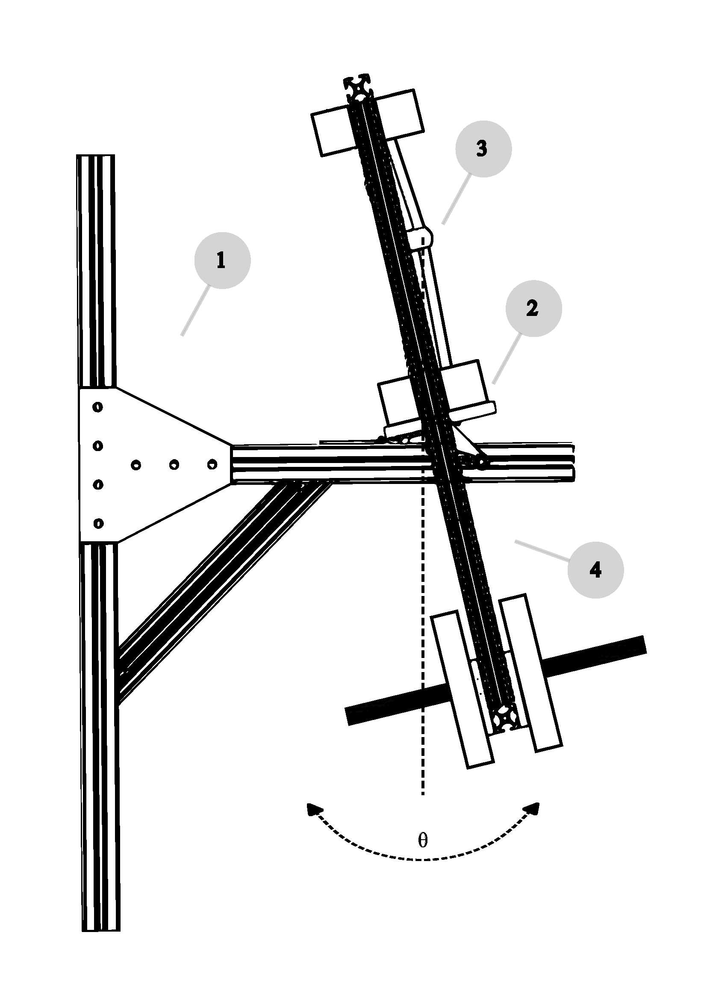

Pendulum Friction Testing Apparatus
Designing a pendulum apparatus to measure the coefficient of friction in porcine (pig) wrist joints by recording how the pendulum's swing decays. Summer research with Dr. Joseph Crisco, supported by the American Society of Biomechanics' Carlo De Luca B-SURE award.
● Ongoing — current researchInteractive 3D Model — The Full Pendulum
Spin the complete assembly around in your browser.
2D Engineering Drawing of Subassemblies

The apparatus consists of four sub-assemblies: 1. The fixed base is constructed from T-slot aluminum extrusion where the vertical column is bolted to a wall-mounted wooden support, and the horizontal cantilever beam is reinforced with two 45° supports. 2. The positioner, mounted on the horizontal beam, allows for a natural relaxed position of the joint. Since porcine wrist joints are relaxed at an angle, unlike the human wrist joints which relax collinearly, the positioner can be fixed at the desired angle prior to initiating the swing. 3. The proximal bone of the wrist specimen is potted and rigidly fixed to the positioner, while the distal bone is potted and bolted to the pendulum above, establishing the joint as the system's fulcrum. 4. The pendulum, assembled from T-slot aluminum extrusion, hangs freely below the joint and carries weight plates on a transverse threaded rod. An IMU sensor is mounted to the top of the pendulum to collect angular position, velocity, and acceleration throughout each trial.
The goal
This research, at Dr. Joseph Crisco's Bioengineering Laboratory in the Department of Orthopaedics (Warren Alpert Medical School of Brown University & Rhode Island Hospital), aims to measure the coefficient of friction inside the wrist joint using porcine specimens. Joint friction is central to understanding cartilage health, wear, and the onset of osteoarthritis — but it is difficult to measure directly. The apparatus I'm designing is the instrument that makes that measurement possible.
How it works: friction from swing decay
The method uses a simple physical principle. If you mount a joint specimen as the pivot of a pendulum and set it swinging, friction in the joint is the main thing draining energy from the motion — so the swing amplitude decays over time. The faster it decays, the higher the friction. By recording how the swing dies down, you can back out the joint's coefficient of friction. It's an elegant way to measure something otherwise hard to access.
A passive pendulum (the version I'm designing now) simply swings freely and is left to decay — clean and well-suited to characterizing friction on its own. An active variant, planned as future work, would drive the motion to test the joint under controlled, sustained conditions.
Where it stands
I'm currently designing the passive pendulum in SolidWorks, working from an initial concept toward a buildable model — selecting aluminum extrusion profiles for the pendulum arm and specimen frame, defining how the joint specimen mounts as the pivot, sizing the pendulum mass, and planning how the swing motion will be recorded. Next steps are finalizing the design, ordering stock, fabricating and assembling the rig in the lab's testing facility, and validating it against known references before testing porcine wrist specimens.